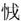

春秋公羊传卷四
桓公上
桓公元年
春王正月，公即位。继弑君不言即位，此其言即位何？如其意也。
三月，公会郑伯于垂。
郑伯以璧假许田。其言以璧假之何？易之也。易之则其言假之何？为恭也。曷为为恭，有天子之存，则诸侯不得专地也。许田者何？鲁朝宿之邑也。诸侯时朝乎天子，天子之郊，诸侯皆有朝宿之邑焉。此鲁朝宿之邑也，则曷为谓之许田？讳取周田也。讳取周田则曷为谓之许田？系之许也。曷为系之许？近许也。此邑也，其称田何？田多邑少称田，邑多田少称邑。
夏四月丁未，公及郑伯盟于越。
秋大水。何以书？记灾也。
冬十月。
桓公二年
二年春王正月，戊申，宋督弑其君与夷及其大夫孔父。及者何？累也。弑君多矣，舍此无累者乎？曰：“有仇牧，荀息，皆累也。”舍仇牧、荀息无累者乎？曰：“有。”有则此何以书？贤也。何贤乎孔父？孔父可谓义形于色矣。其义形于色奈何？督将弑殇公，孔父生而存则殇公不可得而弑也，故于是先攻孔父之家。殇公知孔父死，己必死，趋而救之，皆死焉。孔父正色而立于朝，则人莫敢过而致难于其君者，孔父可谓义形于色矣。
滕子来朝。
三月，公会齐侯、陈侯、郑伯于稷，以成宋乱。内大恶讳，此其目言之何？远也。所见异辞，所闻异辞，所传闻异辞。隐亦远矣，曷为为隐讳？隐贤而桓贱也。
夏四月，取郜大鼎于宋。此取之宋，其谓之郜鼎何？器从名，地从主人。器何以从名？地何以从主人？器之与人非有即尔。宋始以不义取之，故谓之郜鼎。至乎地之与人则不然。俄而可以为其有矣。然则为取可以为其有乎？曰：“否。”何者？若楚王之妻媦，无时焉可也。戊申，纳于大庙。何以书？讥。何讥尔？遂乱受赂，纳于大庙，非礼也。
秋七月，纪侯来朝。
蔡侯、郑伯会于邓，离不言会，此其言会何？盖邓与会尔。
九月入杞。
公及戎盟于唐。
冬，公至自唐。
桓公三年
春正月，公会齐侯于嬴。
夏，齐侯、卫侯胥命于蒲。胥命者何？相命也。何言乎相命？近正也。此其为近正奈何？古者不盟，结言而退。
六月，公会纪侯于盛。
秋七月壬辰朔，日有食之，既。既者何？尽也。
公子翚如齐逆女。
九月，齐侯送姜氏于讙。何以书？讥。何讥尔？诸侯越竟送女，非礼也。此入国矣，何以不称夫人？自我言齐，父母之于子，虽为邻国夫人，犹曰吾姜氏。
公会齐侯于讙，夫人姜氏至自齐。翚何以不致？得见乎公矣。
冬，齐侯使其弟年来聘。
有年。有年何以书？以喜书也。大有年何以书？亦以喜书也。此其曰有年何？仅有年也。彼其曰大有年何？大丰年也。仅有年亦足以当喜乎？恃有年也。
桓公四年
春正月，公狩于郎。狩者何？田狩也，春曰苗，秋曰蒐，冬曰狩。常事不书，此何以书？讥。何讥尔？远也。诸侯曷为必田狩？一曰乾豆，二曰宾客，三曰充君之庖。
夏，天王使宰渠伯纠来聘。宰渠伯纠者何？天子之大夫也。其称宰渠伯纠何？下大夫也。
桓公五年
春正月甲戌、己丑，陈侯鲍卒。曷为以二日？卒之也。甲戌之日亡，己丑之日死，而得君子疑焉，故以二日卒之也。
夏，齐侯郑伯如纪。外相如不书，此何以书？离不言会。
天王使仍叔之子来聘。仍叔之子者何？天子之大夫也。其称仍叔之子何？讥。何讥尔？讥父老子代从政也。
葬陈桓公。
城祝丘。
秋，蔡人、卫人、陈人从王伐郑。其言从王伐郑何？正也。
大雩。大雩者何？旱祭也。然则何以不言旱？言雩则旱见，言旱则雩不见。何以书？记灾也。
螽。何以书？记灾也。
冬，州公如曹。外相如不书。此何以书？过我也。
桓公六年
春正月，寔来。寔来者何？犹曰是人来也。孰谓？谓州公也。曷为谓之寔来？慢之也。曷为慢之？化我也。
夏四月，公会纪侯于成。
秋八月壬午，大阅。大阅者何？简车徒也。何以书？盖以罕书也。蔡人杀陈佗。陈佗者何？陈君也。陈君则曷为谓之陈佗？绝也。曷为绝之？贱也。其贱奈何？外淫也。恶乎淫，淫于蔡，蔡人杀之。
九月丁卯，子同生，子同生者孰谓？谓庄公也。何言乎子同生？喜有正也。未有言喜有正者，此其言喜有正何？久无正也。子公羊子曰：“其诸以病桓与？”
冬，纪侯来朝。